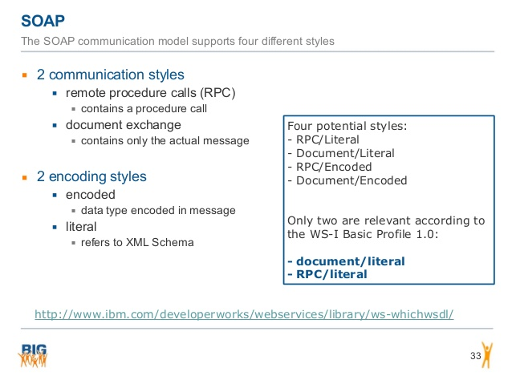
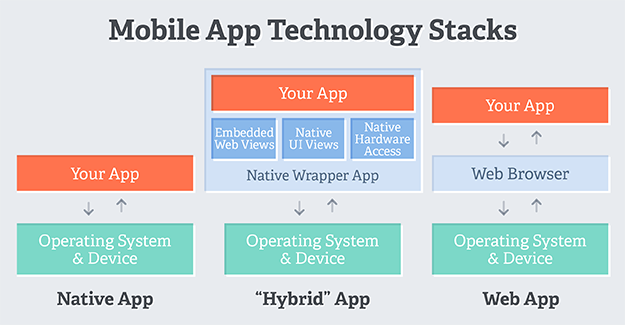

| ninjaframework.org |
A Spring/Play based full-stack web framework |
Web |
|
playframework.org
playframework.org
|
Anatomy of a Play application |
Web |
| github.com |
A sample app to understand SOAP and REST and n-tier architecture |
SOAPREST |
| sys-con.com |

SOAP Communication types (CRD)
- RPC: contains a procedure call
- Document: contains actual message
SOAP Encoding Styles (EEL)
- Encoded: data type encoded in message
- Literal: refers a xml schema
|
SOAP |
| lightbend.com |
TypeSafe activator (http://127.0.0.1:8888) |
Web |
| basicsbehind.com |
Understanding Angular JS Concepts |
Web |
|
vinaysahni.org
restapitutorial.com
|
The REST architectural style describes six constraints
These constraints (USCCCL) were originally communicated by Roy Fielding
- Uniform-Interface
- Stateless
- Cacheable
- Client-Server
- Code-On-Demand
- Layered-System
|
REST |
| raml.org |
RESTful API Modeling Language (RAML) |
REST |
| swagger.io |
Swagger is a simple yet powerful representation of your RESTful API |
REST |
| github.com |
HTTP benchmarking tool |
Web |
| spray.io |
Benchmarking of Spark/Spray/Grizzly/Webgo |
Web |
| playframework.com |
Using the play console to launch a play framework application |
Web |
| github.com |
10 Reasons To Strictly Separate The V In MVC |
Web |
| wikipedia.org |
Responsive web design |
Web |
| vertex.io |
Vert.x for creating light-weight, high-performance, microservices |
Web |
| ionic.io |
Progressive Web Application must have following features
- Progressive - Work for every user, regardless of browser choice
- Responsive - Fit any form factor, desktop, mobile and tablet
- Connectivity independent - Can work offline or on low quality networks
- App-like - Provide app-style navigation and interactions
- Fresh - Always up-to-date
- Safe - Served via HTTPS
- Discoverable - Are identifiable as applications
- Re-engageable - Using features like push notifications
- Installable - Allow users to keep apps on their home screen
- Linkable - Easily share via URL and No complex installation
|
Web |
| telerik.com |
Difference between Native and Hybrid application  |
Web |